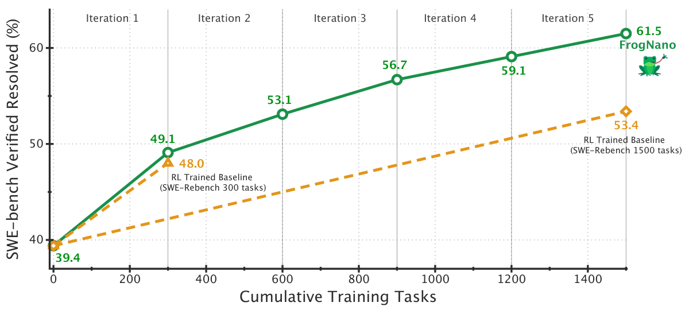
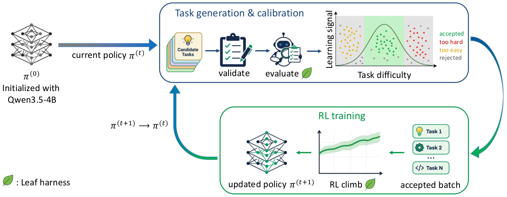

FrogNano: Training a 4B Coding Agent via Online Task Synthesis
TL;DR
- Microsoft's FrogNano (arXiv 2609.07925; Kim, Shi, Sordoni et al.) is a 4B coding agent post-trained purely with RL — no SFT distillation from a frontier teacher at any point — reaching 61.5% on SWE-bench Verified, competitive with models 6–8× its size.
- The load-bearing ingredient is TaskPilot, an online task-synthesis pipeline that generates, validates, and refines synthetic SWE tasks so each candidate's empirical resolve rate under the current checkpoint sits in a target band (≈0.5): tasks evolve with the policy instead of being filtered from a fixed pool.
- Five iterations of ~300 synthetic tasks each beat RL on 1,500 real SWE-ReBench tasks filtered by the same learnability criterion (61.5% vs 53.4%) — and the harness alone (their Claude-Code-style "Leaf") lifts base Qwen3.5-4B from 8.3% to 37.2% before any training.
Why this matters
This report attacks the default assumption behind every small coding model of the last two years: that you get a competent 4B agent by distilling a frontier teacher. FrogNano's target deployment — minimal hardware — rules out both a frontier backbone and a frontier teacher, so the entire capability gain has to come from RL against verifiable synthetic tasks. That it works at all, and that it keeps working across five iterations instead of saturating after one, is evidence for a claim the authors make explicitly: what matters is not the volume of synthetic data but calibration to the learnability frontier of the current checkpoint.
For this tracker's interests it sits at the junction of three threads: automatic environment generation for agentic RL, curriculum-as-self-improvement (the policy shapes the tasks that shape the policy — a closed loop one step short of full RSI), and the recurring finding that harness design dominates small-model performance. It's also a clean counterpoint to the distillation-first recipes tracked here (QED-Nano, the on-policy-distillation lineage): same model scale, disjoint supervision source.

Figure 1 from the paper: five TaskPilot iterations (~300 calibrated synthetic tasks each) take the 4B policy from 39.4% to 61.5% on SWE-bench Verified, vs 48.0% for RL on ~300 real learnability-filtered SWE-ReBench tasks and 53.4% for ~1,500 of them. Numbers averaged over three runs.The core idea
RL on repository-repair tasks only produces signal when the group of sampled trajectories disagrees: tasks the policy never solves give zero advantage, and saturated tasks give almost none. As the policy improves, the useful task distribution moves. Standard practice handles this by difficulty-filtering a large corpus of real tasks with expensive rollouts. TaskPilot instead synthesizes tasks conditioned on the current policy: starting from real repository snapshots (SWE-ReBench), a task-generation model writes a problem statement, gold patch, and hidden fail-to-pass (F2P) tests; the current 4B checkpoint then rolls out on each candidate, and the measured resolve rate decides whether the task is admitted, discarded, or — the distinctive part — revised and re-evaluated, e.g. rewriting an under-specified problem statement until it is "behaviorally precise" without leaking the fix.
For each executable candidate, TaskPilot samples \(N\) full multi-turn trajectories and estimates
where \(R_j\in\{0,1\}\) indicates whether trajectory \(j\) passes all grading tests; the broad learnable region is \(0<\hat{p}_{\mathrm{policy}}<1\), with iterations 1–4 targeting \(\hat{p}_{\mathrm{policy}}=0.5\) and iteration 5 shifting to a lower (harder) band with a stronger task-generation model after the original regime showed weaker gains. The paper's Figure 5 makes the calibration concrete with three variants of the same underlying bug (same snapshot, same gold patch, same tests): a 1,883-character statement with a missing behavioral contract resolves at 0%, a 403-character statement that names the failing class/method/exception resolves at 100%, and the desired 50% variant specifies observable behavior (endpoint closure, zero-width interval semantics) without localizing the implementation.

Figure 3 from the paper: candidate tasks are validated for executability, evaluated by rollouts from the current policy \(\pi^{(t)}\), and accepted only in the mixed-success band; the RL climb on accepted tasks produces \(\pi^{(t+1)}\), which becomes the solver for the next generation phase.How it works
The Leaf harness. Qwen3.5-4B failed the R2E-Gym harness protocol outright — ~96% of trajectories hit the turn limit, often without submitting. Leaf exposes exactly five typed tools (read, write, edit, glob, bash) whose names and schemas follow a small subset of Claude Code's tool interface, dropping planning modes, permission dialogs, and auxiliary tooling. This alone moves the base model from 8.3% to 37.2% on SWE-bench Verified, while a larger model (MiniMax-M2.5) scores 66.5% on both harnesses — interface choices are a bottleneck specifically for compact models. The same harness is used for training and evaluation.
The RL recipe. Each iteration is a 200-update climb with DPPO (group-relative), 32 task groups × 8 trajectories = 256 trajectories per update, asynchronous rollouts on a single 8×B200 node (2 training GPUs, 6 SGLang inference engines). Shaped rewards are standardized within each task group:
with \(R_{ij}\) the shaped reward of trajectory \(j\) on task \(i\); zero-variance groups are discarded (rare, since calibration keeps tasks mixed-success). Off-policy lag from async generation is handled by asymmetric trajectory importance sampling: with \(\rho_t = \pi_\theta(a_t\mid s_t)/\pi_{\mathrm{roll}}(a_t\mid s_t)\) and \(\Delta p_t = p_t - q_t\), positive-advantage tokens are dropped when \(\Delta p_t > 0.2\) (and symmetrically for non-positive advantage), yielding
Notably absent: reference-model KL, entropy bonus. Stability comes from the drop mask, small policy lag, and gradient clipping.
Efficiency reward. Successful trajectories get a success-gated logarithmic length penalty over assistant-generated tokens \(n\) (reasoning + text + tool calls, excluding tool outputs):
so correct solutions are ranked by efficiency while failed exploration is never length-punished. Correct-but-truncated trajectories (context/turn/time budget) get partial reward 0.5.
Algorithm: FrogNano iterative training (TaskPilot + Leaf + DPPO)
Input: base policy π(0) = Qwen3.5-4B, repo snapshots (SWE-ReBench)
for t = 0..4: # 5 iterations
# -- task generation & calibration (TaskPilot) --
repeat until ~300 tasks accepted:
candidate = generate(problem stmt, gold patch, hidden F2P tests)
if not executable(candidate): discard # F2P fails pre-patch, passes post-patch; P2P stable
p̂ = mean of N rollout outcomes under π(t) on Leaf
if p̂ in target band: accept
elif p̂ == 0 or p̂ == 1: refine statement (re-specify / de-localize), re-validate, re-evaluate
else: refine or discard
# -- RL climb --
for update = 1..200:
sample 32 accepted tasks × 8 async trajectories on Leaf
shape rewards (log-length penalty; 0.5 for truncated-correct)
group-standardize advantages; asymmetric-TIS token mask
DPPO update (no KL term, no entropy bonus)
π(t+1) = best checkpoint on validation
return π(5) = FrogNano
Results
- Iteration curve (SWE-bench Verified, avg of 3 runs): 39.4 → 49.1 → 53.1 → 56.7 → 59.1 → 61.5%. Baselines trained on real learnability-filtered SWE-ReBench tasks reach 48.0% (300 tasks) and 53.4% (1,500 tasks) — synthetic-at-the-frontier beats 5× more real filtered data.
- Held-out generalization: evaluated with Leaf (150 steps, 131k context, 3 seeds) on SWE-bench Pro (37.6%), Terminal-Bench 2.0, and PatchEval-Verified; the paper's comparison figure places FrogNano at parity with year-old 32B–100B+ models and competitive with GPT-5 mini, Grok 4, and Opus 4.1 on these agentic coding tasks at roughly a quarter of the serving cost of same-tier 24–32B alternatives.
- Capability, not sharpening: the pass@8 gap between FrogNano and base Qwen3.5-4B stays constant as \(k\) grows — iterative RL moved the frontier rather than collapsing pass@k into pass@1. A GRPO-trained ranking verifier (reciprocal-rank reward \(R = 1/r^{*}\)) and a pass@short heuristic add little on top (60.4% pass@1 on Verified already captures it).
- Reward hacking: attempts run at ~2–3% of trajectories per iteration, blocked by harness/infrastructure; the authors report 0 confirmed hack-related solves after a two-stage detection + adjudication pipeline.
How it connects
- Closest neighbors in this tracker are SPADE's self-play adaptive environments and the "Ability-Aware Environment Distributions" entry — same thesis (the environment distribution must track the policy), but TaskPilot adds the generate–evaluate–refine–re-evaluate loop rather than pure filtering or pure self-play. Tencent's evolving-environments result (tracked today: environments made progressively harder beat co-evolution on Terminal-Bench 2.1) is independent convergent evidence.
- The harness finding (8.3% → 37.2% from tool-interface changes alone) echoes training agents in harnesses and the Prime Agent line: for small models, the harness is part of the model.
- As a distillation-free existence proof it should be read against QED-Nano's distillation-SFT-plus-RL recipe at the same 4B scale (tracked under distillation) and the TGOPD result that teacher supervision helps only where the teacher is verified-reliable — FrogNano is the limiting case where the "teacher" is entirely replaced by verifiable environments.
Critical take
The comparison most likely to be quoted — synthetic beats 1,500 real filtered tasks — is fair on compute but not fully symmetric: TaskPilot's refinement loop spends generation-model and rollout budget that the static baseline doesn't get, and the task-generation model itself is unnamed in the main text (iteration 5 explicitly switches to a "stronger" one), so some frontier-model capability enters through the back door of task authoring even if no teacher tokens are distilled. The claim "no traditional distillation" is precise and honest; "no frontier model involved" would not be. Training data is Python-only repository repair, and SWE-bench Verified — also Python — is the validation set used for checkpoint selection, so the cleanest evidence of generalization is SWE-bench Pro and Terminal-Bench, where absolute numbers are much lower. The 0-confirmed-reward-hacks figure relies on their own two-stage judge (rubric in the appendix); at 2–3% attempt rates across five iterations, even a modest false-negative rate would matter for the top-line number. None of this undercuts the central result: the resolve-rate band is a cheap, policy-relative curriculum signal, and it kept a 4B model learning for five straight iterations.
If you remember three things
- Calibration beats volume: ~300 synthetic tasks per iteration, kept near \(\hat{p}_{\mathrm{policy}}\approx 0.5\) under the current checkpoint, outperform 1,500 real tasks filtered once — the curriculum signal is the policy's own resolve rate, re-measured every iteration.
- The harness is the first 30 points: Claude-Code-style minimal typed tools took Qwen3.5-4B from 8.3% to 37.2% before any RL; big models don't care, small models live or die by interface.
- A 4B agent hit 61.5% SWE-bench Verified with zero distillation — the supervision source was executable environments plus verifiable tests, and pass@8 says the capability frontier actually moved.